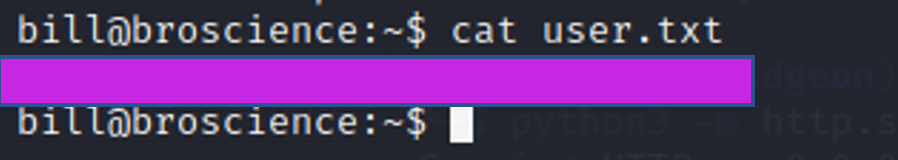

April 2, 2023
BroScience
Tools Needed: Gobuster, Burp Suite, HashCat, PHP and OpenSSL.
Step 1: Start off with an Nmap Scan
nmap -sV -sC <IP ADDRESS> -oA <FILE NAME>
Add broscience.htb to your /etc/hosts file
Broscience.htb will automatically redirect you to the https (port 443) of this website.
You can read about some exercises, and the path looks like it could be susceptible to LFI.
But it looks like we get an invalid ID when we try.
gobuster dir -k -u https://broscience.htb/ -w /usr/share/wordlists/dirbuster/directory-list-2.3-medium.txt
Not many of these are useful so we need to look for something else.
gobuster dir -k -u https://broscience.htb/ -w /usr/share/wordlists/dirbuster/directory-list-2.3-medium.txt -x.ht
We can FUZZ for more information. Let’s see if there’s any files.
gobuster dir -k -u https://broscience.htb/ -w /usr/share/wordlists/seclists/Discovery/Web-Content/raft-medium-files.txt
We can try signing up for an account on the website
And just in case we can put it into burp suite.
When you Register you never receive an email.
If you go to the activate.php page, you get “Missing Activation code”
Navigate to the includes directory and you’ll see some interesting files
Img.php requires a path, and you can specify it by adding ?path= So this may be susceptible to LFI
If you try to read ../../..//etc/hosts here you get an attack detected page
To get around this we need to construct a payload that can bypass this security measure.
Send the payload to decoder
You can’t read /etc/passwd with this technique but you can read the .php files.
You need to send a double encoded payload.
%252e%252e%252f + <FILE>.php
%252e is a “.”
%252f is a “/”
So we could attempt to type %252e%252e%252f%252e%252e%252fetc/passwd which is the equivalent of ../../etc/passwd which still gives us an attack detected.
However if you use it to read the php files on the webpage, you are able to see those.
Activate
Login
Register
In Register.php we can find includes/utils.php, this is what generates our activation code.
You can see that the code uses srand(time(()) to generate the code.
You need to find out the exact time you registered and then put that into the function.
I used this code here, which is just a copy of the code in utils.php. You just need to modify the timestamp to your specific time when you created the account.
I got the time from my Proxy history in burp suite
Run your code to get your registration key
Then you can go to the activate.php?code=<YOUR CODE HERE> to finish the registration process.
If you read the rest of the code in utils.php you can learn a bit about these cookies that get set.
When you log in you get automatically assigned a cookie, you can see the process of this in the same utils.php file.
Steal this code but change the AvatarInterface tmp / img path to something you can control.
Modify the code so you can execute it with php.
Run your code to generate yourself the cookie.
Once you have your cookie, set up a netcat listener and an http server.
Go to your browser and put the cookie in over your current cookie.
Refresh the page, or go to broscience.htb/index.php, this will cause the webserver to download your shell.
Now you can go to broscience.htb/shell.php to trigger the reverse shell.
Now we can run linPEAS
Transfer it over with wget
Let’s read through these interesting files.

Credentials for the SQL Database
We can use PSQL to login.
We can dump the database and get some hashes
Add some salt to your hashes, otherwise you can’t crack them.
Let’s try to crack these hashes
We crack 3/5 of them
And we can log in as bill
You can now get your user flag!
Getting linPEAS on Bill
We can see that the /opt is not empty this time.
This is convenient because there is a Certs directory in Bills home directory
Read through the script
It will use the $commonName variable, meaning if we create a new cert and set the common name to something malicious, it will put that in place of $commonName.
This script will run based off the time certs have, so if there is a valid cert in the directory it will shortly use the newest cert.
Create a new certificate and put some malicious code in the common name field.

Here I am writing to /tmp/outfile and that will contain the root flag
*This is a public box, sometimes trying to chmod +s /bin/bash will not work because another user has already modified the permissions as bill, so you won’t get root this way. That’s why I redirected the root.txt output to avoiding having to reset the box.
Wait a bit for the cronjob to execute and we can get our root flag.
Success! BroScience has been pwned üòé